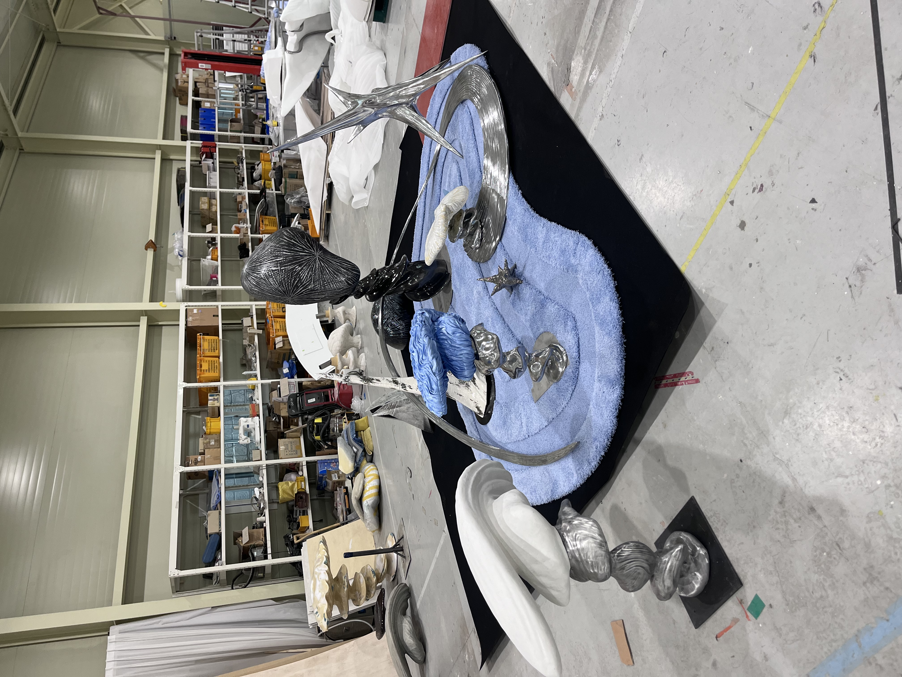

18
젠틀몬스터 재료 샘플링
Providing structural integrity and meticulous design execution for spatial branding.
Execution & Supervision
A-to-Z fabrication processes converting blueprints into physical touchpoints.

Phase
Conceptualization
Fabrication
Installation Setup
Context
Flagship / Pop-up Operation.